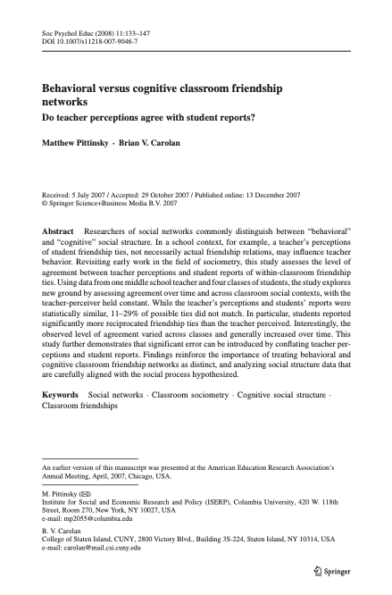
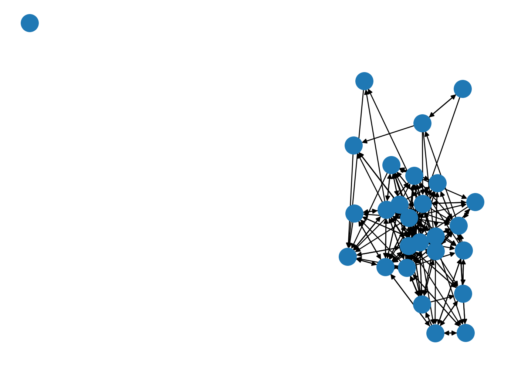
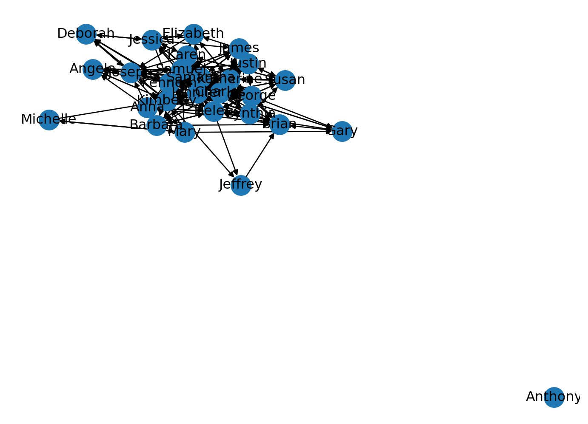
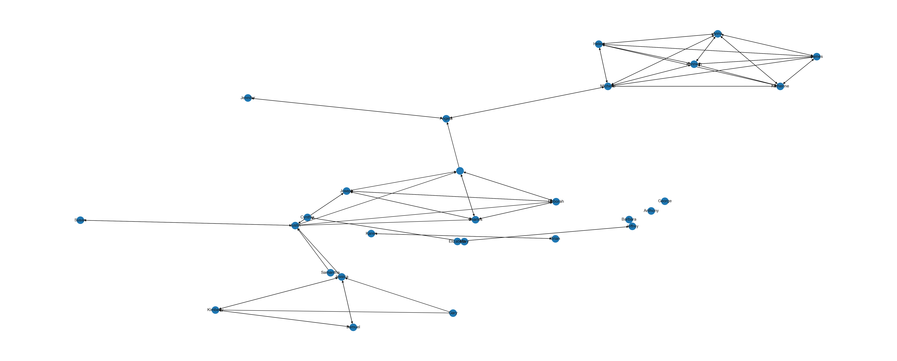
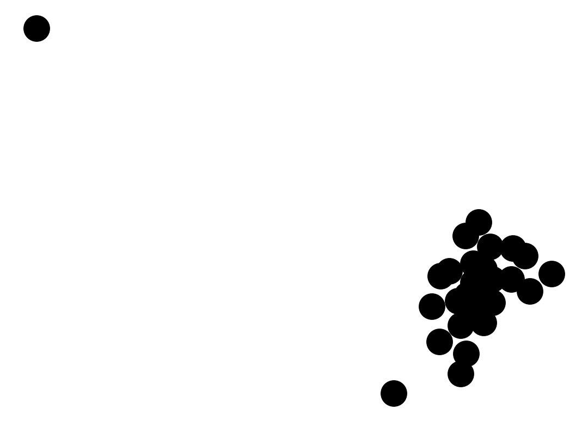
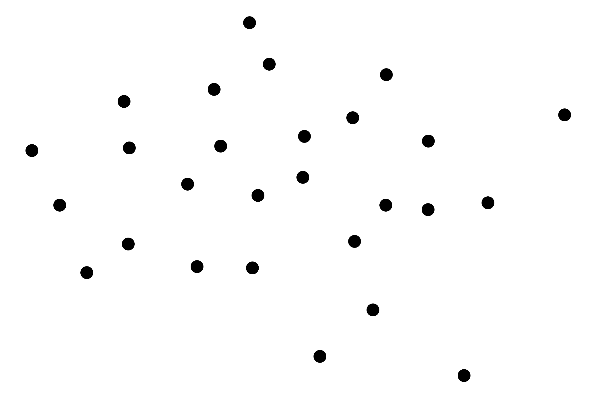
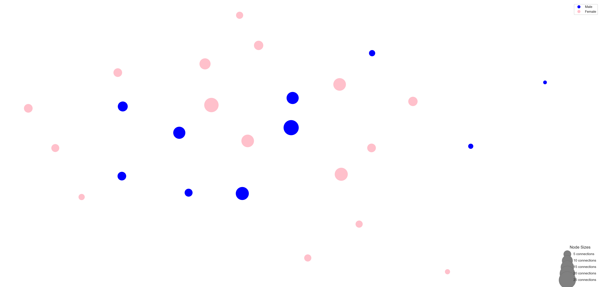
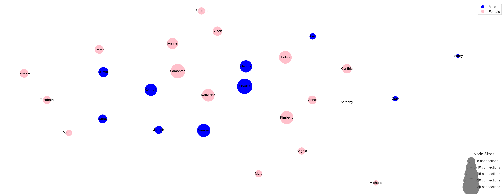

import pandas as pdWho’s Friends with Who in Middle School
SNA Module 1: Case Study Key
1. PREPARE
Our first SNA case study is guided by the work of Matthew Pittinsky and Brian V. Carolan (2008), which employed a social network perspective to examine teachers’ perceptions of student friendships agreed with their own. Sadly, this excellent study did not include any visual depictions comparing student and teacher perceived friendship networks, but we are going to fix that!
Our primary aim for this case study is to gain some hands-on experience with essential Python packages and functions for SNA. We learn how to preparing network data for analysis and creating a simple network sociogram to help describe visually what our network “looks like.” Specifically, this case study will cover the following topics pertaining to each data-intensive workflow process (Krumm, Means, and Bienkowski 2018):
Prepare: Prior to analysis, we’ll look at the context from which our data came, formulate some research questions, and get introduced the {pandas} and {networkx} packages for analyzing and visualizing relational data.
Wrangle: In the wrangling section of our case study, we will learn some basic techniques for manipulating, cleaning, transforming, and merging network data.
Explore: With our network data tidied, we learn to calculate some key network measures and to illustrate some of these stats through network visualization.
Model: We conclude our analysis by introducing community detection algorithms for identifying groups and revisiting sentiment about the common core.
Communicate: We develop a polished sociogram to highlight key findings.
1a. Review the Research

Pittinsky, M., & Carolan, B. V. (2008). Behavioral versus cognitive classroom friendship networks. Social Psychology of Education, 11(2), 133-147.
Abstract
Researchers of social networks commonly distinguish between “behavioral” and “cognitive” social structure. In a school context, for example, a teacher’s perceptions of student friendship ties, not necessarily actual friendship relations, may influence teacher behavior. Revisiting early work in the field of sociometry, this study assesses the level of agreement between teacher perceptions and student reports of within-classroom friendship ties. Using data from one middle school teacher and four classes of students, the study explores new ground by assessing agreement over time and across classroom social contexts, with the teacher-perceiver held constant. While the teacher’s perceptions and students’ reports were statistically similar, 11–29% of possible ties did not match. In particular, students reported significantly more reciprocated friendship ties than the teacher perceived. Interestingly, the observed level of agreement varied across classes and generally increased over time. This study further demonstrates that significant error can be introduced by conflating teacher perceptions and student reports. Findings reinforce the importance of treating behavioral and cognitive classroom friendship networks as distinct, and analyzing social structure data that are carefully aligned with the social process hypothesized.
Research Questions
The central question guiding this investigation was:
Do student reports agree with teacher perceptions when it comes to classroom friendship ties and with what consequences for commonly used social network measures?
We will be using this question to guide our own analysis of the classroom friendships reported by teachers. Specifically, we will use the first part of this question to guide our analysis and develop two sociograms to help visually compare similarities and differences between teacher and student reported classroom friendships.
Data Collection
To measure the level of agreement between student and teacher reports of classroom student friendships, sociometric data were collected from each student in all four classes and the teacher provided similar reports on all students. To collect student reports of friendships, students were given a class roster and asked to describe their relationship with each student in the class. Choices included best friend, friend, know-like, know, know-dislike, strongly dislike, and do not know. In the terminology of network analysis, these sociometric data are “valued” (degrees of friendship, not just yes or no) and “directed” (friendship nominations were not presumed to be reciprocal). Data were collected in the autumn and spring. All “best friend” and “friend” choices are coded as ‘1’ (friend), while all other choices are coded as ‘0’ (not friend). The teacher’s reports of students’ friendships were generated in a similar manner.
Analyses
To assess agreement between perceived friendship by the teacher and students, QAP (quadratic assignment procedure) correlations for each class’s two matrices (teacher and student generated) were analyzed in the autumn and spring. A QAP correlation is used to calculate the degree of association between two sets of relations; it tests whether the probability of dyad overlap in the teacher matrix is correlated with the probability of dyad overlap in the student matrix. It does so by running a large number of simulations. These simulations generate random matrices with sizes and value distributions based on the original two matrices being tested. It then computes an average level of correlation between the matrices that would be expected at random. Similarly, it calculates the probability that the observed degree of correlation between two matrices would be as large or as small as that observed based on the range of correlations generated in the random permutations, with an associated significance statistic.
Key Findings
As reported by Pittinsky and Carolan (2008) in their findings section:
While the teacher’s perceptions and students’ reports were statistically similar, 11–29% of possible ties did not match. In particular, students reported significantly more reciprocated friendship ties than the teacher perceived.
❓Question
Based on what you know about networks and the context so far, what other research question(s) might ask we ask in this context that a social network perspective might be able to answer?
Type a brief response in the space below:
- YOUR RESPONSE HERE
1b. Load Packages
A Python package or library is a collection of modules that offer a set of functions, classes, and variables that enable developers and data analysts to perform many tasks without writing their code from scratch. These can include everything from performing mathematical operations to handling network communications, manipulating images, and more.
pandas 📦

One package that we’ll be using extensively is {pandas}. Pandas (McKinney 2010) is a powerful and flexible open source data analysis and wrangling tool for Python that is used widely by the data science community.
Click the green arrow in the right corner of the “code chunk” that follows to load the {pandas} library introduced in LA Workflow labs.
SciPy 📦

SciPy is a collection of mathematical algorithms and convenience functions built on NumPy. It adds significant power to Python by providing the user with high-level commands and classes for manipulating and visualizing data.
Click the green arrow in the right corner of the “code chunk” that follows to load the {scipy} library:
import scipy as spPyplot 📦

Pyplot is a module in the {matplotlib) package, a comprehensive library for creating static, animated, and interactive visualizations in Python. pyplot provides a MATLAB-like interface for making plots and is particularly suited for interactive plotting and simple cases of programmatic plot generation.
Click the green arrow in the right corner of the “code chunk” that follows to load pyplot:
import matplotlib.pyplot as pltPyplot 📦
Pyplot is a module in the {matplotlib) package, a comprehensive library for creating static, animated, and interactive visualizations in Python. pyplot provides a MATLAB-like interface for making plots and is particularly suited for interactive plotting and simple cases of programmatic plot generation.
Click the green arrow in the right corner of the “code chunk” that follows to load pyplot:
import matplotlib.pyplot as pltNetworkX 📦

NetworkX (Hagberg, Schult, and Swart 2008) is a Python package for the creation, manipulation, and study of the structure, dynamics, and functions of complex networks. It provides tools for the study of the structure and dynamics of social, biological, and infrastructure networks, including:
Data structures for graphs, digraphs, and multigraphs
Many standard graph algorithms
Network structure and analysis measures
Generators for classic graphs, random graphs, and synthetic networks
Nodes that can be “anything” (e.g., text, images, XML records)
Edges that can hold arbitrary data (e.g., weights, time-series)
Ability to work with large nonstandard data sets.
With NetworkX you can load and store networks in standard and nonstandard data formats, generate many types of random and classic networks, analyze network structure, build network models, design new network algorithms, draw networks, and much more.
👉 Your Turn ⤵
Use the code chunk below to import the networkx package as nx:
# YOUR CODE HERE
import networkx as nx2. WRANGLE
In general, data wrangling involves some combination of cleaning, reshaping, transforming, and merging data (Wickham and Grolemund 2016). As highlighted in Estrellado et al. (2020), wrangling network data can be even more challenging than other data sources since network data often includes variables about both individuals and their relationships.
For our data wrangling in module 1, we’re keeping it relatively simple since working with relational data is a bit of a departure from working with rectangular data frames. Our primary goals for Lab 1 is learning how to:
Import Data from Excel. In this section, we learn about the
read_xlsx()function for importing network data stored in two common formats: matrices and nodelists.Convert to Network Data Structure. Before we can create our sociogram, we’ll first need to convert our data frames into special data structure for storing graphs.
2a. Import Data
One of our primary goals for this case study to is create network graph called a sociogram that visually describes what a network “looks like” from the perspective of both students and their teacher. To do so, we’ll need to import two Excel files originally obtained from the Social Network Analysis and Education companion site. Both files contain edges stored as a matrix and are included in the lab-1 data folder of your R Studio project. A description of each file from the companion website is copied below along with a link to the original file:
99472_ds3.xlsx This adjacency matrix consists of student-reported friendship relations among 27 students in one class in the fall semester. These data are directed and unweighted; a friendship tie is present if the student reported that another was either a best friend or friend.
99472_ds5.xlsx This adjacency matrix consists of the teacher-reported friendship relations among 27 students in one class in the fall semester. These data are directed and unweighted; a friendship tie is present if the teacher reported that students were either a best friend or friend.
Relational data (i.e., information about the relationships among individuals in a network) are sometimes stored as an adjacency matrix. Network data stored as a matrix includes a column and row for each actor in our network and each cell contains information about the tie between each pair of actors, often referred to as edges. In our case, each tie is directed, meaning that relationships between actors may not necessarily be reciprocated. For example, student 1 may report student 2 as a friend, but student 2 may or may not report student 1 as friend. If both student 2 and student 2 indicate each other as friends, then this tie, or edge, is considered reciprocal or mutual.
Import Student-Reported Friendships
Let’s use the read_excel() function from the {pandas} package to import the student-reported-friends.xlsx file. In our function, we’ll include an important “argument” called header = and set it to None. This tells Python that our file does not include column names and is important to include since our file is a simple matrix with no header or column names and by default this argument is set to true and would assign the first row which contains data about student friendships as names for each column.
Finally, we need to make sure we can reference the matrix we import and use it later in our analysis. To do so, will save it to our “Environment” by assigning it to a variable which we will call student_friends.
student_friends = pd.read_excel("data/student-reported-friends.xlsx", header = None)👉 Your Turn ⤵
Before importing our teacher-reported friendship file, use the code chunk below to quickly inspect the student_friends data we just imported to see what we’ll be working with.
# YOUR CODE HERE
student_friends| 0 | 1 | 2 | 3 | 4 | 5 | 6 | 7 | 8 | 9 | ... | 17 | 18 | 19 | 20 | 21 | 22 | 23 | 24 | 25 | 26 | |
|---|---|---|---|---|---|---|---|---|---|---|---|---|---|---|---|---|---|---|---|---|---|
| 0 | 0 | 1 | 0 | 1 | 1 | 1 | 1 | 1 | 1 | 0 | ... | 0 | 0 | 0 | 1 | 0 | 1 | 0 | 1 | 0 | 1 |
| 1 | 1 | 0 | 0 | 0 | 1 | 0 | 0 | 0 | 0 | 1 | ... | 0 | 0 | 0 | 1 | 0 | 0 | 0 | 0 | 0 | 0 |
| 2 | 1 | 0 | 0 | 1 | 0 | 0 | 0 | 1 | 0 | 1 | ... | 0 | 0 | 0 | 0 | 0 | 0 | 0 | 0 | 0 | 0 |
| 3 | 1 | 0 | 0 | 0 | 0 | 0 | 0 | 0 | 0 | 0 | ... | 0 | 0 | 0 | 1 | 0 | 0 | 0 | 0 | 1 | 0 |
| 4 | 1 | 1 | 0 | 1 | 0 | 1 | 1 | 1 | 1 | 0 | ... | 1 | 0 | 0 | 1 | 1 | 0 | 0 | 1 | 0 | 1 |
| 5 | 1 | 0 | 0 | 0 | 1 | 0 | 0 | 0 | 1 | 0 | ... | 0 | 0 | 0 | 0 | 0 | 0 | 0 | 0 | 0 | 0 |
| 6 | 1 | 0 | 1 | 1 | 0 | 0 | 0 | 0 | 1 | 0 | ... | 0 | 0 | 0 | 0 | 0 | 1 | 0 | 0 | 0 | 0 |
| 7 | 1 | 0 | 1 | 1 | 1 | 0 | 1 | 0 | 1 | 1 | ... | 0 | 0 | 0 | 1 | 0 | 0 | 1 | 1 | 1 | 1 |
| 8 | 1 | 0 | 0 | 0 | 0 | 1 | 1 | 0 | 0 | 0 | ... | 1 | 0 | 1 | 1 | 0 | 1 | 1 | 1 | 1 | 1 |
| 9 | 1 | 1 | 1 | 1 | 1 | 0 | 1 | 1 | 0 | 0 | ... | 0 | 0 | 0 | 1 | 1 | 0 | 0 | 0 | 0 | 1 |
| 10 | 1 | 1 | 1 | 1 | 1 | 1 | 1 | 1 | 1 | 1 | ... | 1 | 0 | 1 | 1 | 0 | 1 | 0 | 1 | 0 | 1 |
| 11 | 1 | 1 | 0 | 1 | 1 | 1 | 0 | 0 | 0 | 0 | ... | 0 | 0 | 0 | 1 | 0 | 0 | 0 | 1 | 0 | 1 |
| 12 | 0 | 0 | 0 | 0 | 1 | 1 | 1 | 1 | 1 | 0 | ... | 0 | 0 | 0 | 0 | 0 | 1 | 0 | 0 | 0 | 1 |
| 13 | 0 | 0 | 0 | 1 | 0 | 1 | 1 | 0 | 0 | 0 | ... | 0 | 0 | 0 | 0 | 1 | 0 | 0 | 0 | 0 | 0 |
| 14 | 0 | 0 | 0 | 0 | 0 | 0 | 0 | 1 | 0 | 0 | ... | 0 | 0 | 0 | 0 | 0 | 0 | 0 | 0 | 0 | 0 |
| 15 | 0 | 0 | 0 | 0 | 0 | 0 | 0 | 1 | 0 | 1 | ... | 0 | 0 | 1 | 0 | 0 | 0 | 0 | 0 | 0 | 0 |
| 16 | 1 | 0 | 0 | 1 | 1 | 0 | 0 | 0 | 0 | 0 | ... | 0 | 0 | 0 | 0 | 1 | 0 | 0 | 0 | 0 | 0 |
| 17 | 0 | 0 | 0 | 0 | 1 | 0 | 0 | 0 | 1 | 0 | ... | 0 | 0 | 0 | 0 | 0 | 1 | 0 | 1 | 0 | 0 |
| 18 | 0 | 0 | 0 | 0 | 0 | 0 | 0 | 0 | 0 | 0 | ... | 0 | 0 | 0 | 0 | 0 | 0 | 0 | 0 | 0 | 0 |
| 19 | 0 | 0 | 0 | 0 | 0 | 0 | 0 | 0 | 0 | 0 | ... | 0 | 0 | 0 | 0 | 0 | 1 | 0 | 0 | 0 | 0 |
| 20 | 1 | 1 | 0 | 1 | 1 | 0 | 1 | 0 | 1 | 0 | ... | 1 | 0 | 0 | 0 | 0 | 1 | 0 | 1 | 1 | 1 |
| 21 | 0 | 1 | 0 | 0 | 0 | 0 | 0 | 0 | 0 | 0 | ... | 0 | 0 | 0 | 1 | 0 | 0 | 0 | 1 | 1 | 0 |
| 22 | 1 | 0 | 0 | 0 | 0 | 0 | 0 | 0 | 1 | 0 | ... | 0 | 0 | 0 | 0 | 0 | 0 | 0 | 1 | 0 | 0 |
| 23 | 0 | 0 | 0 | 0 | 0 | 0 | 0 | 0 | 0 | 0 | ... | 0 | 0 | 0 | 0 | 0 | 1 | 0 | 0 | 0 | 0 |
| 24 | 1 | 0 | 0 | 0 | 1 | 0 | 0 | 0 | 1 | 0 | ... | 1 | 0 | 0 | 1 | 1 | 1 | 0 | 0 | 0 | 1 |
| 25 | 0 | 0 | 0 | 1 | 0 | 0 | 0 | 0 | 0 | 0 | ... | 0 | 0 | 0 | 1 | 1 | 0 | 0 | 0 | 0 | 0 |
| 26 | 1 | 0 | 0 | 1 | 1 | 0 | 1 | 0 | 1 | 0 | ... | 0 | 0 | 1 | 0 | 0 | 1 | 0 | 1 | 0 | 0 |
27 rows × 27 columns
You should now see a 27 x 27 data table that represents student-reported friendships stored as an adjacency matrix. As noted on pg. 140 of Pittinsky and Carolan (2008), students were given a class roster and asked to describe their relationship with each student using the following choices: best friend, friend, know-like, know, know-dislike, strongly dislike, and do not know. In the terminology of network analysis, these sociometric data are valued (degrees of friendship, not just yes or no).
For the purpose of the their study, and for this case study as well, all “best friend” and “friend” choices are coded as ‘1’ (friend), while all other choices are coded as ‘0’ (not friend). This process of taking a valued relationship or tie (i.e., degrees of friendship, not just yes or no) and simplifying into a binary yes/no relationship is referred to as dichotomization and we’ll explore the benefits and drawbacks of this process in Module 4.
In addition to ties being valued or binary, they can also be undirected or directed. For example, in an undirected network, a friendship either exists between two actors or it does not. In a directed network, one actor or ego may indicate a relationship (e.g., friend or best friend), but the other actor or alter may indicate there is no friendship. If the relationship is present between both actors, however, the tie or edge is considered reciprocated.
❓Question
Provide a brief response in the space below to the following questions: Do the data we just imported indicate that these friendship ties are directed or undirected? How can you tell?
- Directed. For example, Student 1 did not indicate that they are friends with Student 3, but Student 3 indicated they are friends with Student 1.
Add Names
Python has packages for creating random names to help anonymize data, but to keep things simple, we’ll just assign the numbers 1 through 27 as names for our rows and columns.
# Set row and column names from 1 to 27
student_friends.index = range(1, 28)
student_friends.columns = range(1, 28)Again, let quickly inspect our student_friends data table to see if this worked:
student_friends| 1 | 2 | 3 | 4 | 5 | 6 | 7 | 8 | 9 | 10 | ... | 18 | 19 | 20 | 21 | 22 | 23 | 24 | 25 | 26 | 27 | |
|---|---|---|---|---|---|---|---|---|---|---|---|---|---|---|---|---|---|---|---|---|---|
| 1 | 0 | 1 | 0 | 1 | 1 | 1 | 1 | 1 | 1 | 0 | ... | 0 | 0 | 0 | 1 | 0 | 1 | 0 | 1 | 0 | 1 |
| 2 | 1 | 0 | 0 | 0 | 1 | 0 | 0 | 0 | 0 | 1 | ... | 0 | 0 | 0 | 1 | 0 | 0 | 0 | 0 | 0 | 0 |
| 3 | 1 | 0 | 0 | 1 | 0 | 0 | 0 | 1 | 0 | 1 | ... | 0 | 0 | 0 | 0 | 0 | 0 | 0 | 0 | 0 | 0 |
| 4 | 1 | 0 | 0 | 0 | 0 | 0 | 0 | 0 | 0 | 0 | ... | 0 | 0 | 0 | 1 | 0 | 0 | 0 | 0 | 1 | 0 |
| 5 | 1 | 1 | 0 | 1 | 0 | 1 | 1 | 1 | 1 | 0 | ... | 1 | 0 | 0 | 1 | 1 | 0 | 0 | 1 | 0 | 1 |
| 6 | 1 | 0 | 0 | 0 | 1 | 0 | 0 | 0 | 1 | 0 | ... | 0 | 0 | 0 | 0 | 0 | 0 | 0 | 0 | 0 | 0 |
| 7 | 1 | 0 | 1 | 1 | 0 | 0 | 0 | 0 | 1 | 0 | ... | 0 | 0 | 0 | 0 | 0 | 1 | 0 | 0 | 0 | 0 |
| 8 | 1 | 0 | 1 | 1 | 1 | 0 | 1 | 0 | 1 | 1 | ... | 0 | 0 | 0 | 1 | 0 | 0 | 1 | 1 | 1 | 1 |
| 9 | 1 | 0 | 0 | 0 | 0 | 1 | 1 | 0 | 0 | 0 | ... | 1 | 0 | 1 | 1 | 0 | 1 | 1 | 1 | 1 | 1 |
| 10 | 1 | 1 | 1 | 1 | 1 | 0 | 1 | 1 | 0 | 0 | ... | 0 | 0 | 0 | 1 | 1 | 0 | 0 | 0 | 0 | 1 |
| 11 | 1 | 1 | 1 | 1 | 1 | 1 | 1 | 1 | 1 | 1 | ... | 1 | 0 | 1 | 1 | 0 | 1 | 0 | 1 | 0 | 1 |
| 12 | 1 | 1 | 0 | 1 | 1 | 1 | 0 | 0 | 0 | 0 | ... | 0 | 0 | 0 | 1 | 0 | 0 | 0 | 1 | 0 | 1 |
| 13 | 0 | 0 | 0 | 0 | 1 | 1 | 1 | 1 | 1 | 0 | ... | 0 | 0 | 0 | 0 | 0 | 1 | 0 | 0 | 0 | 1 |
| 14 | 0 | 0 | 0 | 1 | 0 | 1 | 1 | 0 | 0 | 0 | ... | 0 | 0 | 0 | 0 | 1 | 0 | 0 | 0 | 0 | 0 |
| 15 | 0 | 0 | 0 | 0 | 0 | 0 | 0 | 1 | 0 | 0 | ... | 0 | 0 | 0 | 0 | 0 | 0 | 0 | 0 | 0 | 0 |
| 16 | 0 | 0 | 0 | 0 | 0 | 0 | 0 | 1 | 0 | 1 | ... | 0 | 0 | 1 | 0 | 0 | 0 | 0 | 0 | 0 | 0 |
| 17 | 1 | 0 | 0 | 1 | 1 | 0 | 0 | 0 | 0 | 0 | ... | 0 | 0 | 0 | 0 | 1 | 0 | 0 | 0 | 0 | 0 |
| 18 | 0 | 0 | 0 | 0 | 1 | 0 | 0 | 0 | 1 | 0 | ... | 0 | 0 | 0 | 0 | 0 | 1 | 0 | 1 | 0 | 0 |
| 19 | 0 | 0 | 0 | 0 | 0 | 0 | 0 | 0 | 0 | 0 | ... | 0 | 0 | 0 | 0 | 0 | 0 | 0 | 0 | 0 | 0 |
| 20 | 0 | 0 | 0 | 0 | 0 | 0 | 0 | 0 | 0 | 0 | ... | 0 | 0 | 0 | 0 | 0 | 1 | 0 | 0 | 0 | 0 |
| 21 | 1 | 1 | 0 | 1 | 1 | 0 | 1 | 0 | 1 | 0 | ... | 1 | 0 | 0 | 0 | 0 | 1 | 0 | 1 | 1 | 1 |
| 22 | 0 | 1 | 0 | 0 | 0 | 0 | 0 | 0 | 0 | 0 | ... | 0 | 0 | 0 | 1 | 0 | 0 | 0 | 1 | 1 | 0 |
| 23 | 1 | 0 | 0 | 0 | 0 | 0 | 0 | 0 | 1 | 0 | ... | 0 | 0 | 0 | 0 | 0 | 0 | 0 | 1 | 0 | 0 |
| 24 | 0 | 0 | 0 | 0 | 0 | 0 | 0 | 0 | 0 | 0 | ... | 0 | 0 | 0 | 0 | 0 | 1 | 0 | 0 | 0 | 0 |
| 25 | 1 | 0 | 0 | 0 | 1 | 0 | 0 | 0 | 1 | 0 | ... | 1 | 0 | 0 | 1 | 1 | 1 | 0 | 0 | 0 | 1 |
| 26 | 0 | 0 | 0 | 1 | 0 | 0 | 0 | 0 | 0 | 0 | ... | 0 | 0 | 0 | 1 | 1 | 0 | 0 | 0 | 0 | 0 |
| 27 | 1 | 0 | 0 | 1 | 1 | 0 | 1 | 0 | 1 | 0 | ... | 0 | 0 | 1 | 0 | 0 | 1 | 0 | 1 | 0 | 0 |
27 rows × 27 columns
Much better! Now we can see that student 1 indicated that student 2 is their friend, and student 2 indicated that student 1 is their friend, so we can say that this friendship is “reciprocated” or “mutual.” As we’ll see in Lab 2, reciprocity is an import network-level measure in SNA.
Import Student Attributes
Before importing our teacher-reported student friendships, we have another important file to import. As noted by Carolan (2014) , most social network analyses include variables that describe the attributes of actors in a network. These attribute variables can be either categorical (e.g., sex, race, etc.) or continuous in nature (e.g., test scores, number of times absent, etc.).
Actor attributes are stored a rectangular array, or data frame, in which rows represent a social entity (e.g., students, staff, schools, etc.), columns represent variables, and cells consist of values on those variables. This file containing a list of actors, or nodes, along with their attributes is sometimes referred to as a node list.
Let’s go ahead and read our node list into python and store as a new object called student_attributes:
student_attributes = pd.read_excel("data/student-attributes.xlsx")
student_attributes| id | name | gender | achievement | gender_num | achievement_num | |
|---|---|---|---|---|---|---|
| 0 | 1 | Katherine | female | high | 1 | 1 |
| 1 | 2 | James | male | average | 0 | 2 |
| 2 | 3 | Angela | female | average | 1 | 2 |
| 3 | 4 | Joseph | male | high | 0 | 1 |
| 4 | 5 | Samantha | female | average | 1 | 2 |
| 5 | 6 | Susan | female | average | 1 | 2 |
| 6 | 7 | Anna | female | high | 1 | 1 |
| 7 | 8 | Kimberly | female | average | 1 | 2 |
| 8 | 9 | Helen | female | high | 1 | 1 |
| 9 | 10 | Samuel | male | low | 0 | 3 |
| 10 | 11 | Charles | male | high | 0 | 1 |
| 11 | 12 | Justin | male | low | 0 | 3 |
| 12 | 13 | Cynthia | female | low | 1 | 3 |
| 13 | 14 | Karen | female | average | 1 | 2 |
| 14 | 15 | Michelle | female | average | 1 | 2 |
| 15 | 16 | Mary | female | low | 1 | 3 |
| 16 | 17 | Elizabeth | female | low | 1 | 3 |
| 17 | 18 | Barbara | female | average | 1 | 2 |
| 18 | 19 | Anthony | male | low | 0 | 3 |
| 19 | 20 | Gary | male | low | 0 | 3 |
| 20 | 21 | Kenneth | male | average | 0 | 2 |
| 21 | 22 | Jessica | female | low | 1 | 3 |
| 22 | 23 | Brian | male | low | 0 | 3 |
| 23 | 24 | Jeffrey | male | high | 0 | 1 |
| 24 | 25 | Jennifer | female | high | 1 | 1 |
| 25 | 26 | Deborah | female | low | 1 | 3 |
| 26 | 27 | George | male | high | 0 | 1 |
Note that when we imported this time, we left out the header = None argument. As mentioned earlier, by default this argument is set to TRUE and assumes the first row of your data frame will contain names of the variables. Since this was indeed the case, we didn’t need to include this argument. We could, however, have included this argument and set it to TRUE and our resulting output would still be the same.
👉 Your Turn ⤵
Complete the code chunk below to import the teacher-reported-friends.xlsx file and inspect your teacher_friends object.
# YOUR CODE HERE
teacher_friends = pd.read_excel("data/teacher-reported-friends.xlsx", header = None)
teacher_friends/Library/Frameworks/Python.framework/Versions/3.12/lib/python3.12/site-packages/openpyxl/worksheet/_reader.py:329: UserWarning: Unknown extension is not supported and will be removed
warn(msg)| 0 | 1 | 2 | 3 | 4 | 5 | 6 | 7 | 8 | 9 | ... | 17 | 18 | 19 | 20 | 21 | 22 | 23 | 24 | 25 | 26 | |
|---|---|---|---|---|---|---|---|---|---|---|---|---|---|---|---|---|---|---|---|---|---|
| 0 | 0 | 0 | 0 | 1 | 0 | 0 | 0 | 0 | 0 | 0 | ... | 0 | 0 | 0 | 0 | 0 | 0 | 0 | 0 | 0 | 1 |
| 1 | 0 | 0 | 1 | 0 | 0 | 0 | 0 | 1 | 0 | 1 | ... | 0 | 0 | 0 | 0 | 1 | 0 | 0 | 0 | 0 | 0 |
| 2 | 0 | 1 | 0 | 0 | 0 | 0 | 0 | 1 | 0 | 1 | ... | 0 | 0 | 0 | 0 | 1 | 0 | 0 | 0 | 0 | 0 |
| 3 | 0 | 0 | 0 | 0 | 0 | 0 | 0 | 0 | 0 | 0 | ... | 0 | 0 | 0 | 0 | 0 | 0 | 0 | 0 | 1 | 0 |
| 4 | 1 | 0 | 0 | 0 | 0 | 0 | 0 | 0 | 0 | 0 | ... | 0 | 0 | 0 | 0 | 0 | 0 | 0 | 0 | 0 | 1 |
| 5 | 0 | 0 | 0 | 0 | 0 | 0 | 0 | 0 | 0 | 0 | ... | 0 | 0 | 0 | 0 | 0 | 0 | 0 | 0 | 0 | 0 |
| 6 | 0 | 0 | 0 | 0 | 0 | 0 | 0 | 0 | 0 | 0 | ... | 0 | 0 | 0 | 0 | 0 | 0 | 0 | 0 | 0 | 0 |
| 7 | 0 | 1 | 1 | 0 | 0 | 0 | 0 | 0 | 0 | 1 | ... | 0 | 0 | 0 | 0 | 1 | 0 | 0 | 0 | 0 | 0 |
| 8 | 0 | 0 | 0 | 0 | 0 | 0 | 0 | 0 | 0 | 0 | ... | 0 | 0 | 0 | 0 | 0 | 1 | 0 | 0 | 0 | 0 |
| 9 | 0 | 1 | 1 | 0 | 0 | 0 | 0 | 1 | 0 | 0 | ... | 0 | 0 | 0 | 0 | 1 | 0 | 0 | 0 | 0 | 0 |
| 10 | 0 | 0 | 0 | 0 | 0 | 0 | 0 | 0 | 1 | 0 | ... | 0 | 0 | 0 | 0 | 0 | 1 | 0 | 0 | 0 | 0 |
| 11 | 1 | 0 | 0 | 0 | 1 | 0 | 0 | 0 | 0 | 0 | ... | 0 | 0 | 0 | 0 | 0 | 0 | 0 | 0 | 0 | 1 |
| 12 | 1 | 0 | 0 | 0 | 1 | 0 | 1 | 0 | 0 | 0 | ... | 0 | 0 | 0 | 0 | 0 | 0 | 0 | 0 | 0 | 1 |
| 13 | 0 | 0 | 0 | 0 | 0 | 0 | 0 | 0 | 0 | 0 | ... | 0 | 0 | 0 | 0 | 0 | 0 | 0 | 0 | 0 | 0 |
| 14 | 0 | 0 | 0 | 0 | 0 | 0 | 0 | 0 | 0 | 0 | ... | 0 | 0 | 0 | 0 | 0 | 0 | 1 | 0 | 0 | 0 |
| 15 | 0 | 1 | 1 | 1 | 0 | 0 | 0 | 1 | 0 | 1 | ... | 0 | 0 | 0 | 0 | 1 | 0 | 0 | 0 | 0 | 0 |
| 16 | 0 | 0 | 0 | 0 | 0 | 0 | 0 | 0 | 0 | 0 | ... | 0 | 0 | 0 | 0 | 0 | 0 | 0 | 0 | 0 | 0 |
| 17 | 0 | 0 | 0 | 0 | 0 | 0 | 0 | 0 | 0 | 0 | ... | 0 | 0 | 0 | 0 | 0 | 0 | 0 | 1 | 0 | 0 |
| 18 | 0 | 0 | 0 | 0 | 0 | 0 | 0 | 0 | 0 | 0 | ... | 0 | 0 | 0 | 0 | 0 | 0 | 0 | 0 | 0 | 0 |
| 19 | 0 | 0 | 0 | 0 | 0 | 0 | 0 | 0 | 0 | 0 | ... | 0 | 0 | 0 | 0 | 0 | 0 | 0 | 0 | 0 | 0 |
| 20 | 0 | 0 | 0 | 0 | 0 | 0 | 0 | 0 | 1 | 0 | ... | 0 | 0 | 0 | 0 | 0 | 1 | 0 | 0 | 0 | 0 |
| 21 | 0 | 1 | 1 | 0 | 0 | 0 | 0 | 1 | 0 | 1 | ... | 0 | 0 | 0 | 0 | 0 | 0 | 0 | 0 | 0 | 0 |
| 22 | 0 | 0 | 0 | 0 | 0 | 0 | 0 | 0 | 1 | 0 | ... | 0 | 0 | 0 | 0 | 0 | 0 | 0 | 0 | 0 | 0 |
| 23 | 0 | 0 | 0 | 0 | 0 | 0 | 0 | 0 | 0 | 0 | ... | 0 | 0 | 0 | 0 | 0 | 0 | 0 | 0 | 0 | 0 |
| 24 | 0 | 0 | 0 | 0 | 0 | 0 | 0 | 0 | 0 | 0 | ... | 1 | 0 | 0 | 0 | 0 | 0 | 0 | 0 | 0 | 0 |
| 25 | 0 | 0 | 0 | 1 | 0 | 0 | 0 | 0 | 0 | 0 | ... | 0 | 0 | 0 | 0 | 0 | 0 | 0 | 0 | 0 | 0 |
| 26 | 1 | 0 | 0 | 0 | 1 | 0 | 0 | 0 | 0 | 0 | ... | 0 | 0 | 0 | 0 | 0 | 0 | 0 | 0 | 0 | 0 |
27 rows × 27 columns
2b. Make a Network Data Structure
Before we can begin exploring our data through through network visualization, we must first convert our student_friends object to a network using {networkx}.
Convert to Graph Object
The from_pandas_adjacency() function can easily convert pandas data frame to a graph.
Run the following code to convert our adjacency matrix to directed network graph data structure, save as a new object called student_network, and use nx.to_pandas_edgelist() to view the basic information about our network:
# Create a directed graph (DiGraph) from pandas adjacency matrix
student_network = nx.from_pandas_adjacency(student_friends, create_using = nx.DiGraph())
#Convert the graph edges to a pandas DataFrame and print(student_network)
print(nx.to_pandas_edgelist(student_network)) source target weight
0 27 25 1
1 27 23 1
2 27 20 1
3 27 14 1
4 27 13 1
.. ... ... ...
198 1 7 1
199 1 6 1
200 1 5 1
201 1 4 1
202 1 2 1
[203 rows x 3 columns]Note that the create_using argument is used to specify the type of graph you want to create when using graph creation functions, such as nx.from_pandas_edgelist, nx.from_numpy_matrix, or in our case nx.from_pandas_adjacency. This argument allows you to define the graph class (e.g., undirected, directed, multigraph, etc.) that should be used for constructing the graph.
By default, many NetworkX functions create an undirected graph. If you want to create a different type of graph, such as a directed graph (DiGraph), a multi-graph (MultiGraph) with multiple types of ties, or a directed multi-graph (MultiDiGraph), you can pass the corresponding class to the create_using = parameter. This is particularly useful when the nature of your data or the analysis you intend to perform requires a specific type of graph.
# Extract the edges from the NetworkX graph
student_edges = nx.to_pandas_edgelist(student_network)
pd.set_option('display.max_rows', student_edges.shape[0] + 1)
print(student_edges) source target weight
0 27 25 1
1 27 23 1
2 27 20 1
3 27 14 1
4 27 13 1
5 27 12 1
6 27 11 1
7 27 9 1
8 27 7 1
9 27 5 1
10 27 4 1
11 27 1 1
12 26 22 1
13 26 21 1
14 26 4 1
15 25 27 1
16 25 23 1
17 25 22 1
18 25 21 1
19 25 18 1
20 25 12 1
21 25 11 1
22 25 9 1
23 25 5 1
24 25 1 1
25 24 23 1
26 23 25 1
27 23 9 1
28 23 1 1
29 22 26 1
30 22 25 1
31 22 21 1
32 22 17 1
33 22 14 1
34 22 2 1
35 21 27 1
36 21 26 1
37 21 25 1
38 21 23 1
39 21 18 1
40 21 14 1
41 21 9 1
42 21 7 1
43 21 5 1
44 21 4 1
45 21 2 1
46 21 1 1
47 20 23 1
48 20 11 1
49 18 25 1
50 18 23 1
51 18 9 1
52 18 5 1
53 17 22 1
54 17 14 1
55 17 5 1
56 17 4 1
57 17 1 1
58 16 20 1
59 16 15 1
60 16 10 1
61 16 8 1
62 15 16 1
63 15 8 1
64 14 22 1
65 14 17 1
66 14 11 1
67 14 7 1
68 14 6 1
69 14 4 1
70 13 27 1
71 13 23 1
72 13 9 1
73 13 8 1
74 13 7 1
75 13 6 1
76 13 5 1
77 12 27 1
78 12 25 1
79 12 21 1
80 12 6 1
81 12 5 1
82 12 4 1
83 12 2 1
84 12 1 1
85 11 27 1
86 11 25 1
87 11 23 1
88 11 21 1
89 11 20 1
90 11 18 1
91 11 14 1
92 11 13 1
93 11 12 1
94 11 10 1
95 11 9 1
96 11 8 1
97 11 7 1
98 11 6 1
99 11 5 1
100 11 4 1
101 11 3 1
102 11 2 1
103 11 1 1
104 10 27 1
105 10 22 1
106 10 21 1
107 10 17 1
108 10 13 1
109 10 12 1
110 10 11 1
111 10 8 1
112 10 7 1
113 10 5 1
114 10 4 1
115 10 3 1
116 10 2 1
117 10 1 1
118 9 27 1
119 9 26 1
120 9 25 1
121 9 24 1
122 9 23 1
123 9 21 1
124 9 20 1
125 9 18 1
126 9 13 1
127 9 11 1
128 9 7 1
129 9 6 1
130 9 1 1
131 8 27 1
132 8 26 1
133 8 25 1
134 8 24 1
135 8 21 1
136 8 13 1
137 8 11 1
138 8 10 1
139 8 9 1
140 8 7 1
141 8 5 1
142 8 4 1
143 8 3 1
144 8 1 1
145 7 23 1
146 7 13 1
147 7 9 1
148 7 4 1
149 7 3 1
150 7 1 1
151 6 14 1
152 6 13 1
153 6 12 1
154 6 11 1
155 6 9 1
156 6 5 1
157 6 1 1
158 5 27 1
159 5 25 1
160 5 22 1
161 5 21 1
162 5 18 1
163 5 17 1
164 5 14 1
165 5 13 1
166 5 12 1
167 5 11 1
168 5 9 1
169 5 8 1
170 5 7 1
171 5 6 1
172 5 4 1
173 5 2 1
174 5 1 1
175 4 26 1
176 4 21 1
177 4 16 1
178 4 12 1
179 4 1 1
180 3 10 1
181 3 8 1
182 3 4 1
183 3 1 1
184 2 21 1
185 2 17 1
186 2 11 1
187 2 10 1
188 2 5 1
189 2 1 1
190 1 27 1
191 1 25 1
192 1 23 1
193 1 21 1
194 1 17 1
195 1 12 1
196 1 9 1
197 1 8 1
198 1 7 1
199 1 6 1
200 1 5 1
201 1 4 1
202 1 2 1Add Node Attributes
Although an underlying assumption of social network analysis is that social relations are often more important for understanding behaviors and attitudes than attributes related to one’s background (e.g., age, gender, etc.), these attributes often still play an important role in SNA. Specifcially attributes can enrich our understanding of networks by adding contextual information about actors and their relations. For example, actor attributes can be used to for:
- Community Detection: Identifying groups with shared attributes, revealing substructures within the network.
- Homophily Analysis: Examining the tendency for similar individuals to connect, shedding light on social cohesion.
- Influence and Diffusion: Understanding how characteristics of individuals affect the spread of information or behaviors.
- Centrality Analysis: Correlating attributes with centrality measures to assess individuals’ influence based on their traits.
- Network Dynamics: Investigating how changes in attributes correspond to the evolution of network structures.
- Statistical Modeling: Incorporating attributes in models to explore the interplay between individual traits and network formation.
- Visualization: Enhancing network visualizations by using attributes to differentiate nodes, making patterns more discernible.
We will explore several of these use cases throughout the SNA modules, but for this case study, our focus will be to incoporate some student attribtues to enhance our visualizations.
Run the following code to add the attributes in our student_attributes data frame to our network object student_network that we created earlier:
# Create a directed graph from edge DataFrame (student_edges)
student_network = nx.from_pandas_edgelist(student_edges, source='source', target='target', create_using=nx.DiGraph())
# Add node attributes from node DataFrame (student_attributes)
student_network.add_nodes_from(student_attributes.set_index('id').to_dict(orient='index').items())Before we move on, let’s take a quick look at each node’s attribute data to make sure our code above worked as intended:
print("Nodes:", student_network.nodes(data=True))
print("Edges:", student_network.edges())Nodes: [(27, {'name': 'George', 'gender': 'male', 'achievement': 'high', 'gender_num': 0, 'achievement_num': 1}), (25, {'name': 'Jennifer', 'gender': 'female', 'achievement': 'high', 'gender_num': 1, 'achievement_num': 1}), (23, {'name': 'Brian', 'gender': 'male', 'achievement': 'low', 'gender_num': 0, 'achievement_num': 3}), (20, {'name': 'Gary', 'gender': 'male', 'achievement': 'low', 'gender_num': 0, 'achievement_num': 3}), (14, {'name': 'Karen', 'gender': 'female', 'achievement': 'average', 'gender_num': 1, 'achievement_num': 2}), (13, {'name': 'Cynthia', 'gender': 'female', 'achievement': 'low', 'gender_num': 1, 'achievement_num': 3}), (12, {'name': 'Justin', 'gender': 'male', 'achievement': 'low', 'gender_num': 0, 'achievement_num': 3}), (11, {'name': 'Charles', 'gender': 'male', 'achievement': 'high', 'gender_num': 0, 'achievement_num': 1}), (9, {'name': 'Helen', 'gender': 'female', 'achievement': 'high', 'gender_num': 1, 'achievement_num': 1}), (7, {'name': 'Anna', 'gender': 'female', 'achievement': 'high', 'gender_num': 1, 'achievement_num': 1}), (5, {'name': 'Samantha', 'gender': 'female', 'achievement': 'average', 'gender_num': 1, 'achievement_num': 2}), (4, {'name': 'Joseph', 'gender': 'male', 'achievement': 'high', 'gender_num': 0, 'achievement_num': 1}), (1, {'name': 'Katherine', 'gender': 'female', 'achievement': 'high', 'gender_num': 1, 'achievement_num': 1}), (26, {'name': 'Deborah', 'gender': 'female', 'achievement': 'low', 'gender_num': 1, 'achievement_num': 3}), (22, {'name': 'Jessica', 'gender': 'female', 'achievement': 'low', 'gender_num': 1, 'achievement_num': 3}), (21, {'name': 'Kenneth', 'gender': 'male', 'achievement': 'average', 'gender_num': 0, 'achievement_num': 2}), (18, {'name': 'Barbara', 'gender': 'female', 'achievement': 'average', 'gender_num': 1, 'achievement_num': 2}), (24, {'name': 'Jeffrey', 'gender': 'male', 'achievement': 'high', 'gender_num': 0, 'achievement_num': 1}), (17, {'name': 'Elizabeth', 'gender': 'female', 'achievement': 'low', 'gender_num': 1, 'achievement_num': 3}), (2, {'name': 'James', 'gender': 'male', 'achievement': 'average', 'gender_num': 0, 'achievement_num': 2}), (16, {'name': 'Mary', 'gender': 'female', 'achievement': 'low', 'gender_num': 1, 'achievement_num': 3}), (15, {'name': 'Michelle', 'gender': 'female', 'achievement': 'average', 'gender_num': 1, 'achievement_num': 2}), (10, {'name': 'Samuel', 'gender': 'male', 'achievement': 'low', 'gender_num': 0, 'achievement_num': 3}), (8, {'name': 'Kimberly', 'gender': 'female', 'achievement': 'average', 'gender_num': 1, 'achievement_num': 2}), (6, {'name': 'Susan', 'gender': 'female', 'achievement': 'average', 'gender_num': 1, 'achievement_num': 2}), (3, {'name': 'Angela', 'gender': 'female', 'achievement': 'average', 'gender_num': 1, 'achievement_num': 2}), (19, {'name': 'Anthony', 'gender': 'male', 'achievement': 'low', 'gender_num': 0, 'achievement_num': 3})]
Edges: [(27, 25), (27, 23), (27, 20), (27, 14), (27, 13), (27, 12), (27, 11), (27, 9), (27, 7), (27, 5), (27, 4), (27, 1), (25, 27), (25, 23), (25, 22), (25, 21), (25, 18), (25, 12), (25, 11), (25, 9), (25, 5), (25, 1), (23, 25), (23, 9), (23, 1), (20, 23), (20, 11), (14, 22), (14, 17), (14, 11), (14, 7), (14, 6), (14, 4), (13, 27), (13, 23), (13, 9), (13, 8), (13, 7), (13, 6), (13, 5), (12, 27), (12, 25), (12, 21), (12, 6), (12, 5), (12, 4), (12, 2), (12, 1), (11, 27), (11, 25), (11, 23), (11, 21), (11, 20), (11, 18), (11, 14), (11, 13), (11, 12), (11, 10), (11, 9), (11, 8), (11, 7), (11, 6), (11, 5), (11, 4), (11, 3), (11, 2), (11, 1), (9, 27), (9, 26), (9, 25), (9, 24), (9, 23), (9, 21), (9, 20), (9, 18), (9, 13), (9, 11), (9, 7), (9, 6), (9, 1), (7, 23), (7, 13), (7, 9), (7, 4), (7, 3), (7, 1), (5, 27), (5, 25), (5, 22), (5, 21), (5, 18), (5, 17), (5, 14), (5, 13), (5, 12), (5, 11), (5, 9), (5, 8), (5, 7), (5, 6), (5, 4), (5, 2), (5, 1), (4, 26), (4, 21), (4, 16), (4, 12), (4, 1), (1, 27), (1, 25), (1, 23), (1, 21), (1, 17), (1, 12), (1, 9), (1, 8), (1, 7), (1, 6), (1, 5), (1, 4), (1, 2), (26, 22), (26, 21), (26, 4), (22, 26), (22, 25), (22, 21), (22, 17), (22, 14), (22, 2), (21, 27), (21, 26), (21, 25), (21, 23), (21, 18), (21, 14), (21, 9), (21, 7), (21, 5), (21, 4), (21, 2), (21, 1), (18, 25), (18, 23), (18, 9), (18, 5), (24, 23), (17, 22), (17, 14), (17, 5), (17, 4), (17, 1), (2, 21), (2, 17), (2, 11), (2, 10), (2, 5), (2, 1), (16, 20), (16, 15), (16, 10), (16, 8), (15, 16), (15, 8), (10, 27), (10, 22), (10, 21), (10, 17), (10, 13), (10, 12), (10, 11), (10, 8), (10, 7), (10, 5), (10, 4), (10, 3), (10, 2), (10, 1), (8, 27), (8, 26), (8, 25), (8, 24), (8, 21), (8, 13), (8, 11), (8, 10), (8, 9), (8, 7), (8, 5), (8, 4), (8, 3), (8, 1), (6, 14), (6, 13), (6, 12), (6, 11), (6, 9), (6, 5), (6, 1), (3, 10), (3, 8), (3, 4), (3, 1)]Excellent, each node in our network object now
👉 Your Turn ⤵
Complete the code chunk below to convert your teacher_friends object first to a matrix and then to a network object that contains information about both the teacher-reported student friendships and the attributes of students:
# YOUR CODE HERE
#first method to creating the teacher_network from an adjacency matrix
teacher_friends = pd.read_excel("data/teacher-reported-friends.xlsx", header = None)
teacher_network = nx.from_pandas_adjacency(teacher_friends, create_using = nx.DiGraph())
#second method approach to creating the teacher_network from edge list
#extract edges from teacher network
teacher_edges = nx.to_pandas_edgelist(teacher_network)
# Create a directed graph from edge DataFrame - student_edges
teacher_network = nx.from_pandas_edgelist(teacher_edges, source='source', target='target', create_using=nx.DiGraph())
# Add node attributes from node DataFrame (student_attributes)
teacher_network.add_nodes_from(student_attributes.set_index('id').to_dict(orient='index').items())
#print(teacher_network)
print("Nodes:", teacher_network.nodes(data=True))
print("Edges:", teacher_network.edges())Nodes: [(0, {}), (3, {'name': 'Angela', 'gender': 'female', 'achievement': 'average', 'gender_num': 1, 'achievement_num': 2}), (11, {'name': 'Charles', 'gender': 'male', 'achievement': 'high', 'gender_num': 0, 'achievement_num': 1}), (26, {'name': 'Deborah', 'gender': 'female', 'achievement': 'low', 'gender_num': 1, 'achievement_num': 3}), (1, {'name': 'Katherine', 'gender': 'female', 'achievement': 'high', 'gender_num': 1, 'achievement_num': 1}), (2, {'name': 'James', 'gender': 'male', 'achievement': 'average', 'gender_num': 0, 'achievement_num': 2}), (7, {'name': 'Anna', 'gender': 'female', 'achievement': 'high', 'gender_num': 1, 'achievement_num': 1}), (9, {'name': 'Helen', 'gender': 'female', 'achievement': 'high', 'gender_num': 1, 'achievement_num': 1}), (15, {'name': 'Michelle', 'gender': 'female', 'achievement': 'average', 'gender_num': 1, 'achievement_num': 2}), (21, {'name': 'Kenneth', 'gender': 'male', 'achievement': 'average', 'gender_num': 0, 'achievement_num': 2}), (25, {'name': 'Jennifer', 'gender': 'female', 'achievement': 'high', 'gender_num': 1, 'achievement_num': 1}), (4, {'name': 'Joseph', 'gender': 'male', 'achievement': 'high', 'gender_num': 0, 'achievement_num': 1}), (12, {'name': 'Justin', 'gender': 'male', 'achievement': 'low', 'gender_num': 0, 'achievement_num': 3}), (5, {'name': 'Samantha', 'gender': 'female', 'achievement': 'average', 'gender_num': 1, 'achievement_num': 2}), (6, {'name': 'Susan', 'gender': 'female', 'achievement': 'average', 'gender_num': 1, 'achievement_num': 2}), (8, {'name': 'Kimberly', 'gender': 'female', 'achievement': 'average', 'gender_num': 1, 'achievement_num': 2}), (10, {'name': 'Samuel', 'gender': 'male', 'achievement': 'low', 'gender_num': 0, 'achievement_num': 3}), (22, {'name': 'Jessica', 'gender': 'female', 'achievement': 'low', 'gender_num': 1, 'achievement_num': 3}), (13, {'name': 'Cynthia', 'gender': 'female', 'achievement': 'low', 'gender_num': 1, 'achievement_num': 3}), (16, {'name': 'Mary', 'gender': 'female', 'achievement': 'low', 'gender_num': 1, 'achievement_num': 3}), (14, {'name': 'Karen', 'gender': 'female', 'achievement': 'average', 'gender_num': 1, 'achievement_num': 2}), (23, {'name': 'Brian', 'gender': 'male', 'achievement': 'low', 'gender_num': 0, 'achievement_num': 3}), (17, {'name': 'Elizabeth', 'gender': 'female', 'achievement': 'low', 'gender_num': 1, 'achievement_num': 3}), (24, {'name': 'Jeffrey', 'gender': 'male', 'achievement': 'high', 'gender_num': 0, 'achievement_num': 1}), (20, {'name': 'Gary', 'gender': 'male', 'achievement': 'low', 'gender_num': 0, 'achievement_num': 3}), (18, {'name': 'Barbara', 'gender': 'female', 'achievement': 'average', 'gender_num': 1, 'achievement_num': 2}), (19, {'name': 'Anthony', 'gender': 'male', 'achievement': 'low', 'gender_num': 0, 'achievement_num': 3}), (27, {'name': 'George', 'gender': 'male', 'achievement': 'high', 'gender_num': 0, 'achievement_num': 1})]
Edges: [(0, 3), (0, 11), (0, 26), (3, 15), (3, 25), (11, 0), (11, 4), (11, 26), (26, 0), (26, 4), (26, 11), (1, 2), (1, 7), (1, 9), (1, 15), (1, 21), (2, 1), (2, 7), (2, 9), (2, 15), (2, 21), (7, 1), (7, 2), (7, 9), (7, 15), (7, 21), (9, 1), (9, 2), (9, 7), (9, 15), (9, 21), (15, 1), (15, 2), (15, 3), (15, 7), (15, 9), (15, 21), (21, 1), (21, 2), (21, 7), (21, 9), (21, 15), (25, 3), (4, 0), (4, 11), (4, 12), (4, 26), (12, 0), (12, 4), (12, 6), (12, 11), (12, 26), (5, 12), (6, 12), (8, 10), (8, 22), (10, 8), (10, 22), (22, 8), (22, 10), (22, 12), (13, 16), (16, 13), (14, 23), (23, 14), (17, 24), (24, 17), (20, 8), (20, 22)]/Library/Frameworks/Python.framework/Versions/3.12/lib/python3.12/site-packages/openpyxl/worksheet/_reader.py:329: UserWarning: Unknown extension is not supported and will be removed
warn(msg)❓Question
Now answer the following questions:
How many students are in our network?
- YOUR RESPONSE HERE
Who reported more friendships, teachers or students? How do you know?
- YOUR RESPONSE HERE
3. EXPLORE
As noted in our course readings, one of the defining characteristics of the social network perspective is its use of graphic imagery to represent actors and their relations with one another. To emphasize this point, Carolan (2014) reported that:
The visualization of social networks has been a core practice since its foundation more than 100 years ago and remains a hallmark of contemporary social network analysis.
Network visualization can be used for a variety of purposes, ranging from highlighting key actors to even serving as works of art.
This excellent figure from Katya Ognyanova’s also excellent tutorial on Static and Dynamic Network Visualization with R helps illustrate the variety of goals a good network visualization can accomplish:

In Section 3 work focus on just visualization, and will use the {tidygraph} package to create a network sociogram to help visually describe our network and compare teacher and student reported friendships. Specifically, in this section we’ll learn to make a:
Simple Sociogram. We learn about the basic
draw()function for creating a very quick network plot when just a quick visual inspection is needed.Sophisticated Sociogram. We then dive deeper in to the
draw_kamada_kawai()function with various parameters and learn to plot nodes and edges in our network and tweak key elements like the size, shape, and position of nodes and edges to better at communicating key findings.
3a. Simple Sociograms
These visual representations of the actors and their relations, i.e. the network, are called a sociogram. Actors who are most central to the network, such as those with higher node degrees, or those with more friends in our case study, are usually placed in the center of the sociogram and their ties are placed near them.
In the code chunk below, use the draw() function with your student_network object to see what the basic plot function produces:
nx.draw(student_network)
plt.show()
plt.clf()
<Figure size 672x480 with 0 Axes># Extract the 'name' attributes
node_labels = nx.get_node_attributes(student_network, 'name')
print(node_labels)
nx.draw(student_network, labels=node_labels, with_labels=True)
plt.show()
plt.clf(){27: 'George', 25: 'Jennifer', 23: 'Brian', 20: 'Gary', 14: 'Karen', 13: 'Cynthia', 12: 'Justin', 11: 'Charles', 9: 'Helen', 7: 'Anna', 5: 'Samantha', 4: 'Joseph', 1: 'Katherine', 26: 'Deborah', 22: 'Jessica', 21: 'Kenneth', 18: 'Barbara', 24: 'Jeffrey', 17: 'Elizabeth', 2: 'James', 16: 'Mary', 15: 'Michelle', 10: 'Samuel', 8: 'Kimberly', 6: 'Susan', 3: 'Angela', 19: 'Anthony'}
<Figure size 672x480 with 0 Axes>If this had been a smaller network it might have been a little more useful but one important insight is that we have already identified an “isolate” in our network, i.e., a student who neither named others as a friend or was named by others as a friend.
Fortunately, the {networkx} package includes a range of drawing and functions for improving for improving the visual design of network graphs.
Run the following code to try out the kamada_kawai_layout() layout and add some informative labels to our graph:
plt.figure(figsize=(30, 12))
# Create the layout for your nodes using kamada_kawai_layout
pos = nx.kamada_kawai_layout(student_network)
# Extract the 'gender' attribute
node_gender = nx.get_node_attributes(student_network, 'gender')
# Define colors for each gender
gender_colors = {"male": "blue", "female": "pink"}
node_colors = [gender_colors[node_gender[node]] for node in student_network.nodes()]
nx.draw(student_network, with_labels=True, pos=pos, labels=node_labels,node_color=node_colors)
# Create a legend for gender colors
from matplotlib.lines import Line2D
legend_elements = [Line2D([0], [0], marker='o', color='w', label='Male', markersize=10, markerfacecolor='blue'),
Line2D([0], [0], marker='o', color='w', label='Female', markersize=10, markerfacecolor='pink')]
plt.legend(handles=legend_elements, loc='best')
# Display the graph
plt.show()
plt.clf()
<Figure size 672x480 with 0 Axes>Much better. Now, let’s unpack what’s happening in this code:
nx.kamada_kawai_layout(G)computes the position of nodes based on the Kamada-Kawai layout algorithm, which is designed to produce visually appealing layouts by considering the graph’s structure.nx.draw()is used to draw the graph, withwith_labels=Trueensuring that the default node identifiers are used as labels.The
node_colorandnode_sizeparameters are set for visual customization, but you can adjust these according to your preference.
This generates a visualization of your network with nodes positioned according to the Kamada-Kawai layout and labeled with their default identifiers.
There are other popular data visualization libraries in Python - Seaborn and Plotnine
Seaborn
Seaborn is a Python data visualization library based on Matplotlib that provides a high-level interface for creating attractive statistical graphics. It integrates seamlessly with Pandas DataFrames and offers built-in functions for various types of plots. Seaborn excels in visualizing relationships between multiple variables and customizing plot aesthetics.
Plotnine
Plotnine is a Python data visualization library based on the grammar of graphics, similar to R’s ggplot2. It allows users to build complex plots incrementally by adding layers and defining aesthetics. Plotnine supports faceting and offers extensive customization options for every plot component.
import seaborn as sns
# Set seaborn theme
sns.set_theme(style="whitegrid")
plt.figure(figsize=(50, 35))
# Create the layout for your nodes using kamada_kawai_layout
pos = nx.kamada_kawai_layout(student_network)
# Draw the graph without node labels
nx.draw(student_network, pos, with_labels=False)
# Extract the 'name' attributes
labels = nx.get_node_attributes(student_network, 'name')
# Draw the graph with default labels (node identifiers)
nx.draw_networkx_labels(student_network, pos, labels, font_size=10)
# Display the graph
plt.show()
plt.clf()
<Figure size 672x480 with 0 Axes>from plotnine import ggplot, aes, geom_segment, geom_point, theme, element_text
# Assuming 'student_network' is your NetworkX graph
# Create the layout for your nodes using kamada_kawai_layout
pos = nx.kamada_kawai_layout(student_network)
# Convert positions to a DataFrame
pos_df = pd.DataFrame(pos).T.reset_index()
pos_df.columns = ['name', 'x', 'y']
# Create edges DataFrame
edges = nx.to_pandas_edgelist(student_network)
edges = edges.merge(pos_df, left_on='source', right_on='name')
edges = edges.merge(pos_df, left_on='target', right_on='name', suffixes=('_source', '_target'))
# Plot using plotnine
p = (ggplot(edges) +
geom_segment(aes(x='x_source', y='y_source', xend='x_target', yend='y_target'), color='grey') +
geom_point(aes(x='x', y='y'), pos_df, size=4) +
theme(figure_size=(10, 8),
axis_text_x=element_text(size=10),
axis_text_y=element_text(size=10),
axis_title_x=element_text(size=12),
axis_title_y=element_text(size=12)))
print(p)
plt.clf()/var/folders/n_/y03lvw5130b2ct_8v03d6r840000gq/T/ipykernel_17191/2165096014.py:26: FutureWarning: Using print(plot) to draw and show the plot figure is deprecated and will be removed in a future version. Use plot.show().
<Figure size 672x480 with 0 Axes>👉 Your Turn ⤵
Use the code chunk below to try out these simple sociogram functions on your teacher_network object you created above:
plt.figure(figsize=(30, 12))
# Position the nodes using one of the layout algorithms
pos = nx.kamada_kawai_layout(teacher_network)
# Draw the graph without node labels
nx.draw(teacher_network, pos, with_labels=False)
# Extract the 'name' attribute from each node to use as labels
labels = nx.get_node_attributes(teacher_network, 'name')
# Draw node labels using the 'name' attribute
nx.draw_networkx_labels(teacher_network, pos, labels, font_size=10)
# Display the graph
plt.show()
plt.clf()
<Figure size 672x480 with 0 Axes>Not exactly great graphs, but they already provided some insight into our research questions. Specifically, we can see visually that teacher and student reported peer networks are very different!
3b. Sophisticated Sociograms
Node Attributes
Run the following code chunk to see some additional arguments were added into the new layout. We assign different colors for gender and adjust the size of nodes, font, width, and transparency of the arrows.
plt.figure(figsize=(15, 10))<Figure size 1440x960 with 0 Axes><Figure size 1440x960 with 0 Axes>❓Question
What do the colors of the nodes represent in the sociogram above?
- YOUR RESPONSE HERE
Add Nodes
In Python, to add nodes, we use the nx.draw_networkx_nodes() function. This function draws nodes onto the plot. In contrast to {ggplot2}, where “geom” in geom_non_point() signifies “geometric elements”, in NetworkX, drawing nodes directly with nx.draw_networkx_nodes() achieves a similar purpose, visually representing nodes in the plot.
Now “add” the nx.draw_networkx_nodes() function to our code
👉 Your Turn ⤵
#plt.figure(figsize=(15, 10))
# Compute node positions (layout)
pos = nx.spring_layout(student_network)
# Draw only nodes as black spots
nx.draw_networkx_nodes(student_network, pos=pos, node_color='black')
plt.axis('off')
plt.show()
plt.clf()
<Figure size 672x480 with 0 Axes>Well, at least we have our nodes now!
Add Layout
One of the major advances in visualization since the first hand-drawn sociograms developed by Jacob Moreno (1934) to represent relations among children in school is the use of software and algorithms to automatically layout networks on a grid.
There are may different layout methods. In NetworkX, the default layout used by functions like nx.draw() when you don’t explicitly specify a layout algorithm is the spring layout (also known as the Fruchterman-Reingold layout). The spring layout algorithm attempts to position nodes such that connected nodes are closer together and disconnected nodes are farther apart.
Other layouts include the circular_layout and the nx.kamada_kawai_layout. These types of force-directed algorithms generally work well with large networks and try to layout graphs in “an aesthetically-pleasing way” by making edges roughly equal in length and minimizing overlap.
Let’s go ahead and include the pos argument, a dictionary that maps each node to its position in the layout. This argument can be passed to functions to specify or retrieve node positions, usually computed using layout algorithms such as nx.kamada_kawai_layout()
plt.figure(figsize=(15, 10))
# Compute node positions (layout)
pos = nx.kamada_kawai_layout(student_network)
# Draw only nodes as black spots
nx.draw_networkx_nodes(student_network, pos=pos, node_color='black')
plt.axis('off')
plt.show()
plt.clf()
<Figure size 672x480 with 0 Axes>That’s not much better so let’s stick with the “stress” layout for now. Feel free to try out some other layout methods if you like, however. There are also
Tweak Nodes
In NetworkX, graphical elements (draw() functions) can include visual attributes (node_color, node_shape, node_size) for color, shape, and size.
Let’s now add some “aesthetics” to our points by including the aes() function and arguments such as size = and color =. We’ll use our gender variable for color and set the size of the node using local_size() function, which will base the size of each node on the number of friends each student nominated.
Now, let’s enhance our node visualization by including attributes such as color and size. We’ll assign colors based on the gender variable and adjust node sizes using a function like nx.set_node_attributes() to reflect the number of friends each student nominated.
# Calculate node sizes based on the number of neighbors (degree)
node_sizes = [len(list(student_network.neighbors(node))) * 100 for node in student_network.nodes]
plt.figure(figsize=(30, 15))
# Compute node positions (layout)
pos = nx.kamada_kawai_layout(student_network)
node_gender = nx.get_node_attributes(student_network, 'gender')
# Define colors for each gender
gender_colors = {"male": "blue", "female": "pink"}
node_colors = [gender_colors[node_gender[node]] for node in student_network.nodes()]
# Draw network nodes
nx.draw_networkx_nodes(student_network, node_size=node_sizes, pos=pos, node_color=node_colors)
# Create a legend for gender colors
from matplotlib.lines import Line2D
gender_legend_elements = [Line2D([0], [0], marker='o', color='w', label='Male', markersize=10, markerfacecolor='blue'),
Line2D([0], [0], marker='o', color='w', label='Female', markersize=10, markerfacecolor='pink')]
# Add the gender legend to the plot
ax = plt.gca()
first_legend = ax.legend(handles=gender_legend_elements, loc='upper right', bbox_to_anchor=(1.05, 1), fontsize='small')
ax.add_artist(first_legend)
# Create legend for node sizes (degrees)
legend_sizes = [5, 10, 15, 20, 25] # Define specific node sizes for legend
for size in legend_sizes:
plt.scatter([], [], s=size * 100, label=f'{size} connections', color='gray', edgecolors='black', linewidth=0.1)
# Add the size legend
size_legend = ax.legend(scatterpoints=1, frameon=False, labelspacing=1, title='Node Sizes', loc='lower right', bbox_to_anchor=(1.05, 0), fontsize='small')
plt.axis('off')
plt.show()
plt.clf()
<Figure size 672x480 with 0 Axes>We can easily see that the number of friends ranges from 5 to 20, with the exception of one “isolated” student we identified earlier who is not connected to any other students in the network, and therefore is smaller in size on the graph.
Let’s fix that by adding another layer with some node text and labels. Since node labels are a geometric element, we can apply aesthetics to them as well, like color and size. Let’s also include the repel = argument that when set to TRUE will avoid overlapping text.
# Calculate node sizes based on the number of neighbors (degree)
plt.figure(figsize=(25, 10))
# Compute node positions (layout)
pos = nx.kamada_kawai_layout(student_network)
# Draw nodes with colors based on gender and sizes based on degree
nx.draw_networkx_nodes(student_network, pos=pos, node_size=node_sizes, node_color=node_colors)
# Draw node labels
nx.draw_networkx_labels(student_network, pos=pos, labels=node_labels, font_size=10, font_color='black', font_family='sans-serif')
# Create a legend for gender colors
from matplotlib.lines import Line2D
gender_legend_elements = [Line2D([0], [0], marker='o', color='w', label='Male', markersize=10, markerfacecolor='blue'),
Line2D([0], [0], marker='o', color='w', label='Female', markersize=10, markerfacecolor='pink')]
# Add the gender legend to the plot
ax = plt.gca()
first_legend = ax.legend(handles=gender_legend_elements, loc='upper right', bbox_to_anchor=(1.05, 1), fontsize='small')
ax.add_artist(first_legend)
# Create legend for node sizes (degrees)
legend_sizes = [5, 10, 15, 20, 25] # Define specific node sizes for legend
for size in legend_sizes:
plt.scatter([], [], s=size * 100, label=f'{size} connections', color='gray', edgecolors='black', linewidth=0.1)
# Add the size legend
size_legend = ax.legend(scatterpoints=1, frameon=False, labelspacing=1, title='Node Sizes', loc='lower right', bbox_to_anchor=(1.05, 0), fontsize='small')
plt.axis('off')
plt.show()
plt.clf()
<Figure size 672x480 with 0 Axes>Add Edges
Now, let’s literally connect the dots and add some edges using the geom_edge_link() function.
# Compute node positions (layout)
pos = nx.kamada_kawai_layout(student_network)
# Draw nodes with colors based on gender and sizes based on degree
nx.draw_networkx_nodes(student_network, pos=pos, node_size=node_sizes, node_color=node_colors)
# Draw node labels with repulsion to avoid overlap
nx.draw_networkx_labels(student_network, pos=pos, labels=node_labels, font_size=10, font_color='black')
# Draw edges without arrows
nx.draw_networkx_edges(student_network, pos=pos, arrows=False)
# Display the graph
plt.axis('off')
plt.show()
plt.clf()
<Figure size 672x480 with 0 Axes>Ack! Without some adjustment, the edges make it really difficult to see the nodes. Fortunately, you can also adjust the edges just like we did to the nodes above: Let’s now include the following arguments:
arrow =to include some arrows 1mm in lengthend_cap =andstart_cap =to keep arrows from overlapping the nodes, and toalpha = .2set the transparency of our edges so our edges fade more into the background and help keep the focus on our nodes:
# Compute node positions (layout)
pos = nx.kamada_kawai_layout(student_network)
# Draw nodes with colors based on gender and sizes based on degree
nx.draw_networkx_nodes(student_network, pos=pos, node_size=node_sizes, node_color=node_colors)
# Draw node labels with repulsion to avoid overlap
nx.draw_networkx_labels(student_network, pos=pos, labels=node_labels, font_size=10, font_color='black')
# Draw edges with arrows, adjusting parameters for aesthetics
nx.draw_networkx_edges(student_network, pos=pos, arrowsize=10,
edge_color='gray', width=1.5, alpha=0.2, connectionstyle='arc3,rad=0.1')
# Display the graph
plt.axis('off')
plt.show()
plt.clf()
<Figure size 672x480 with 0 Axes>Add a Theme
In NetworkX, there isn’t a direct equivalent function like theme_graph() as found in ggplot2 for styling entire graphs. Instead, styling in NetworkX is typically done through individual function parameters and settings when drawing nodes, edges, and labels.
To achieve similar graph aesthetics as intended by theme_graph() in ggplot2, you can manually adjust various visual aspects such as node colors, edge styles, and background settings in NetworkX. Here’s a basic example of setting up a graph with custom styles in NetworkX
# Compute node positions (layout) using a stress layout
pos = nx.kamada_kawai_layout(student_network, weight=None) #, iterations=50)
# Draw nodes with colors based on gender and sizes based on degree
nx.draw_networkx_nodes(student_network, pos=pos, node_size=node_sizes, node_color=node_colors)
# Draw edges with arrows and adjust edge aesthetics
nx.draw_networkx_edges(student_network, pos=pos, arrows=True, arrowstyle='-|>',
edge_color='gray', width=1.0, alpha=0.1)
# Draw node labels with repulsion to avoid overlap
nx.draw_networkx_labels(student_network, pos=pos, labels=node_labels, font_size=10, font_color='black', font_family='sans-serif', font_weight='bold')
# Display the graph
plt.axis('off')
plt.show()
plt.clf()
<Figure size 672x480 with 0 Axes>Much better! Notice also how we shifted the geom_node_point() layer of our graph to after the geom_edge_link() so the parts of nodes would not be hidden under the edges.
Note: If you’re having difficulty seeing the sociogram in the small R Markdown code chunk, you can copy and paste the code in the console and it will show in the Viewer pan and then you can enlarge and even save as an image file.
👉 Your Turn ⤵
Use the code chunk below to try out these more sophisticated sociogram functions on your teacher_network object you created above:
# Calculate node sizes based on the number of neighbors (degree)
node_sizes = [len(list(teacher_network.neighbors(node))) * 100 for node in teacher_network.nodes]
node_labels = nx.get_node_attributes(teacher_network, 'name')
node_gender = nx.get_node_attributes(teacher_network, 'gender')
plt.figure(figsize=(30, 12))
# Position the nodes using one of the layout algorithms
pos = nx.kamada_kawai_layout(teacher_network)
# Define colors for each gender
gender_colors = {"male": "blue", "female": "pink"}
node_colors = [gender_colors.get(node_gender.get(node, ''), 'gray') for node in teacher_network.nodes()]
# Draw network nodes
nx.draw_networkx_nodes(teacher_network, node_size=node_sizes, pos=pos, node_color=node_colors)
# Draw edges without arrows
nx.draw_networkx_edges(student_network, pos=pos)
# Draw node labels
nx.draw_networkx_labels(teacher_network, pos=pos, labels=node_labels, font_size=10, font_color='black', font_family='sans-serif')
# Draw edges with arrows, adjusting parameters for aesthetics
nx.draw_networkx_edges(student_network, pos=pos, arrowsize=10,
edge_color='gray', width=1.5, alpha=0.2, connectionstyle='arc3,rad=0.1')
# Create a legend for gender colors
from matplotlib.lines import Line2D
gender_legend_elements = [Line2D([0], [0], marker='o', color='w', label='Male', markersize=10, markerfacecolor='blue'),
Line2D([0], [0], marker='o', color='w', label='Female', markersize=10, markerfacecolor='pink')]
# Add the gender legend to the plot
ax = plt.gca()
first_legend = ax.legend(handles=gender_legend_elements, loc='upper right', bbox_to_anchor=(1.05, 1), fontsize='small')
ax.add_artist(first_legend)
# Create legend for node sizes (degrees)
legend_sizes = [5, 10, 15, 20, 25] # Define specific node sizes for legend
for size in legend_sizes:
plt.scatter([], [], s=size * 100, label=f'{size} connections', color='gray', edgecolors='black', linewidth=0.1)
# Add the size legend
size_legend = ax.legend(scatterpoints=1, frameon=False, labelspacing=1, title='Node Sizes', loc='lower right', bbox_to_anchor=(1.05, 0), fontsize='small')
# Display the graph
plt.axis('off')
plt.show()
plt.clf()
<Figure size 672x480 with 0 Axes>Congrats, you made it to the end of the EXPLORE section and created your first sociogram in Python!
Note: If you’re having difficulty seeing the sociogram in the small code chunk, you can copy and paste the code in the console and it will show in the Viewer pan and then you can enlarge and even save as an image file.
Congrats, you made it to the end of the EXPLORE section and created your first sociogram in Python!
4. MODEL
As highlighted in Chapter 3 of Data Science in Education Using R, the Model step of the data science process entails “using statistical models, from simple to complex, to understand trends and patterns in the data.” We will not explore the use of models for SNA until Module 4, but recall from the PREPARE section that to assess agreement between perceived friendships by the teacher and students, (Pittinsky and Carolan 2008) note that:
The QAP (quadratic assignment procedure) [is] used to calculate the degree of association between two sets of relations and tests whether the probability of dyad overlap in the teacher matrix is correlated with the probability of dyad overlap in the student matrix. It does so by running a large number of simulations. These simulations generate random matrices with sizes and value distributions based on the original two matrices being tested.
We will learn more about the QAP and other models for statistical inference when working with relational data in Learning Lab 4.
5. COMMUNICATE
The final step in the workflow/process is sharing the results of your analysis with wider audience. Krumm et al. Krumm, Means, and Bienkowski (2018) have outlined the following 3-step process for communicating with education stakeholders findings from an analysis:
Select. Communicating what one has learned involves selecting among those analyses that are most important and most useful to an intended audience, as well as selecting a form for displaying that information, such as a graph or table in static or interactive form, i.e. a “data product.”
Polish. After creating initial versions of data products, research teams often spend time refining or polishing them, by adding or editing titles, labels, and notations and by working with colors and shapes to highlight key points.
Narrate. Writing a narrative to accompany the data products involves, at a minimum, pairing a data product with its related research question, describing how best to interpret the data product, and explaining the ways in which the data product helps answer the research question and might be used to inform new analyses or a “change idea” for improving student learning.
Render File
For your SNA Badge, you will have an opportunity to create a simple “data product” designed to illustrate some insights gained from your analysis and ideally highlight an action step or change idea that can be used to improve learning or the contexts in which learning occurs.
For now, we will wrap up this case study by converting your work to an HTML file that can be published and used to communicate your learning and demonstrate some of your new R skills. To do so, you will need to “render” your document by clicking the  Render button in the menu bar at that the top of this file.
Render button in the menu bar at that the top of this file.
Rendering a document does two important things:
checks through all your code for any errors; and,
creates a file in your directory that you can use to share you work .
Now that you’ve finished your first case study, click the “Render” button in the toolbar at the top of your document to covert this Quarto document to a HTML web page, just one of the many publishing formats you can create with Quarto documents.
If the files rendered correctly, you should now see a new file named sna-1-case-study-R.html in the Files tab located in the bottom right corner of R Studio. If so, congratulations, you just completed the getting started activity! You’re now ready for the unit Case Studies that we will complete during the third week of each unit.
Important
If you encounter errors when you try to render, first check the case study answer key located in the files pane and has the suggested code for the Your Turns. If you are still having difficulties, try copying and pasting the error into Google or ChatGPT to see if you can resolve the issue. Finally, contact your instructor to debug the code together if you’re still having issues.
Publish File
Rendered HTML files can be published online through a variety of ways including Posit Cloud, RPubs , GitHub Pages, Quarto Pub, or other methods. The easiest way to quickly publish your file online is to publish directly from RStudio. You can do so by clicking the “Publish” button located in the Viewer Pane after you render your document as illustrated in the screenshot below.

Congratulations, you’ve completed the case study! If you’ve already completed the Essential Readings, you’re now ready to earn your first SNA LASER Badge!
References
Carolan, Brian. 2014. “Social Network Analysis and Education: Theory, Methods & Applications.” https://doi.org/10.4135/9781452270104.
Estrellado, Ryan A., Emily A. Freer, Jesse Mostipak, Joshua M. Rosenberg, and Isabella C. Velásquez. 2020. Data Science in Education Using r. Routledge. https://doi.org/10.4324/9780367822842.
Hagberg, Aric A., Daniel A. Schult, and Pieter J. Swart. 2008. “Exploring Network Structure, Dynamics, and Function Using NetworkX.” In Proceedings of the 7th Python in Science Conference, edited by Gaël Varoquaux, Travis Vaught, and Jarrod Millman, 11–15. Pasadena, CA USA.
Krumm, Andrew, Barbara Means, and Marie Bienkowski. 2018. Learning Analytics Goes to School. Routledge. https://doi.org/10.4324/9781315650722.
McKinney, Wes. 2010. “Data Structures for Statistical Computing in Python.” In Proceedings of the 9th Python in Science Conference, edited by Stéfan van der Walt and Jarrod Millman, 56–61. https://doi.org/ 10.25080/Majora-92bf1922-00a .
Pittinsky, Matthew, and Brian V Carolan. 2008. “Behavioral Versus Cognitive Classroom Friendship Networks: Do Teacher Perceptions Agree with Student Reports?” Social Psychology of Education 11: 133–47. https://link.springer.com/content/pdf/10.1007/s11218-007-9046-7.pdf.
Wickham, Hadley, and Garrett Grolemund. 2016. R for Data Science: Import, Tidy, Transform, Visualize, and Model Data. " O’Reilly Media, Inc.". https://r4ds.had.co.nz.